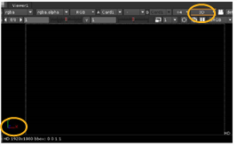

让我们从基础开始。在第一个示例中，您将创建一个基本的 3D 节点树，将图像映射到 3D 卡，操作它，然后将结果渲染回 2D 复合。
| 1。 | 在 “3Dinteg _ tutor.nk” 项目文件中，找到标记为“ 设置 3D 系统 。”您将看到一个带有您将在本示例中使用的图像的读取节点。 |
| 2. | 单击鼠标右键, Nuke_sign.jpg 节点，然后选择 3D> 几何> 卡片 . |
这附加了一个 “Card1” 节点。让我们看看它在 3D 中是什么样子。
| 3. | 将查看器附加到 Card1 节点和 核武器 将查看器切换到 3D。 |
哇，太神奇了。它看起来很像 2D 查看器。谁能区别呢？检查查看器的左下角，您将看到 3D 中三个轴的方向标记。您还将看到 “3D” 显示在视图下拉菜单上。

这个标志比预期的要暗一点，不是吗？实际上，你还看不到图像，因为 3D 工作区的默认视图位于空间的原点或中心。也许缩小可能会改善视野。
| 4. | 按下 Alt 密钥 (Windows/Linux) 或 选项 键 (OS X)，然后用鼠标中键拖动以缩放或 “推拉”。“向左拖动，您将缩小。 |

嘿，看。有了 核武器 徽章。在 3D 查看器中，“平移” 和 “缩放” 控件与您用于节点树和 2D 查看器的控件完全相同, 但是让我们试着 “翻滚” 来获得更好的视野。
| 5. | Alt- 或 选项 -使用鼠标右键拖动，围绕 3D 工作区的原点旋转。现在可以看到 3D 网格和映射到卡片的图像。 |

当图像直接连接到这样的卡片节点时，它将作为平面或 “平面” 地图应用。卡片的大小会根据图像的尺寸进行调整。
| 6. | 单击卡片，然后选择节点树中的节点，以及 3D 工作区中的卡片。 |
| 7. | 使用鼠标 (和 Alt 键) 浏览工作区。继续，平移，多利，并随意旋转。然后，按 F 在查看器上绘制 3D 视图。 |
提示: 如果您不喜欢标准导航控件，请打开 偏好 控制面板 ( 移位 S )，选择 观众 选项卡并更改 3D 控制类型 到 玛雅 , 光波 ,或 胡迪尼 .
| 8。 | 单击节点图中的空白处以取消选择所有节点。让我们添加您需要的其他节点。 |
| 9. | 右键单击节点图并选择 3D> 相机 。保持其控制面板打开，以便您可以在查看器中操作相机。 |
| 10. | 右键单击并选择 3D> ScanlineRender 插入渲染节点，然后连接节点，如下所示。 |
| 11。 | 将查看器连接到 ScanlineRender 节点，你有最基本的 3D 系统 核武器 . |
| 12. | 新闻 标签 在查看器上更改为 2D 视图。你不会看到 核武器 徽章-嘿，它去哪里了？我们以前见过。 |
| 13。 | 新闻 标签 再次切换到 3D。您将看到默认相机位置太近，无法查看卡。让我们移动一些东西来获得 2D 图像。 |

| 1。 | Alt- 或 选项- 使用鼠标中键拖动以推开并显示更多 3D 工作区。 |
| 2. | 选择相机。您可以通过单击查看器中的相机对象或单击 Camera1 节点图中的节点。 |
| 3. | 拖动变换控制柄，沿 z 轴将相机远离卡。 |
拖动相机时，请查看相机的控制面板。您将看到 x/y/z 变换值反映了相机的当前位置。
| 4. | 按下并按住 Ctrl (Mac 用户按 命令 ) 在查看器和变换手柄上更改为旋转环。 |

| 5. | 拖动绿色环，围绕 Y 轴旋转相机。请注意，控制面板中的 x/y/z 旋转值反映了旋转角度。 |
蓝色手柄在 Z 轴上 “滚动” 或旋转，红色手柄在 X 轴上旋转。
| 6. | 现在，选择卡对象并将其从相机移开。 |
保持卡节点的控制面板打开。与相机节点一样，当您关闭控制面板时，变换控制柄将从查看器中消失。
| 7. | 拖动卡片的变换手柄，将其放置在 3D 工作区中。如果你愿意，按 Ctrl 键 (Mac 用户按 命令 ) 在观察者上方并旋转卡片。 |

| 8。 | 新闻 标签 在查看器上切换 2D 和 3D 视图，以查看 ScanlineRender 节点生成的图像。 |
| 9. | 在继续下一个示例之前，请关闭当前打开的所有控制面板。 |
在这个例子中，你移动相机或卡片的位置并不重要。然而，实际上，您经常需要使用特定的值，您可以直接在控制面板中输入这些值。
您还可以导入相机数据或动画曲线-您注意到 导入 chan 文件 相机控制面板中的按钮？-并将它们应用于工作区中的对象。
|
|